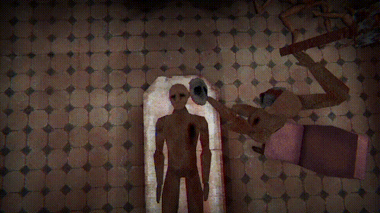

The Maker Of Masks
As part of my second one-month-long horror jam, I wanted to create a short experience that channeled the eerie, low-poly aesthetic of PS1-era games, focusing on atmosphere and environmental storytelling. The Maker of Masks was the result—a surreal, claustrophobic game set in a prison with strange rules.
I experimented with fixed camera angles to mimic classic survival horror games, using tight spaces and limited visibility to amplify tension. The mask mechanic became the core metaphor: something both grotesque and necessary, forcing the player to confront the prison’s twisted logic.
For the visuals, I embraced low-poly models and grainy textures to enhance the dreamlike, distorted feel. Sound design was crucial—distant machinery, echoing footsteps, and the thud of the mask being hammered onto the player’s face all helped sell the dread.

It was rewarding to see players dissect the game’s mystery and react to its intentionally jarring tone. Some even made gameplay videos analyzing the lore, which was surreal to watch! The project taught me a lot about crafting mood with minimal resources—and how much a strong central metaphor can elevate horror.
Here is one of my favourites: